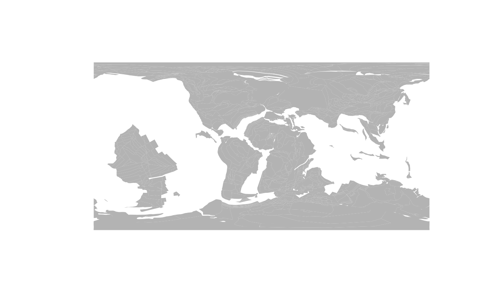
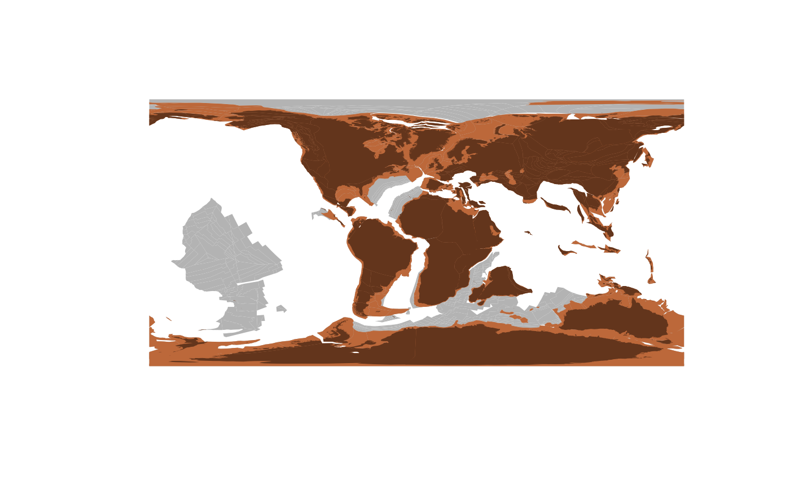

4. Reconstruction with data from the chronosphere
Source:vignettes/4_reconstruction_with_chronosphere.Rmd
4_reconstruction_with_chronosphere.Rmd
Originally, all functions in rgplates were developed in the envelope of the chronosphere project. However, since the project’s inception the functionality of these modules diverged: rgplates contains functions to execute plate tectonic reconstructions with R, and the chronosphere is a data distribution and versioning system. The two are connected with the tectonic model data: we will download and import these with the chronosphere and use them with rgplates.
Loading packages
For this highly optimized workflow, both the rgplates and the chronosphere R package are required.
library(rgplates)
#> Loading required package: sf
#> Linking to GEOS 3.8.0, GDAL 3.0.4, PROJ 6.3.1; sf_use_s2() is TRUE
library(chronosphere)
#> Chronosphere - Evolving Earth System Variables
#> Important: never fetch data as a superuser / with admin. privileges!
#>
#> Note that the package was split for efficient maintenance and development:
#> - Plate tectonic calculations -> package 'rgplates'
#> - Arrays of raster and vector spatials -> package 'via'Downloading data
Detailed tutorials will be made available later about how to use the chronosphere-portal. For now, all we need to know, is how to access the platemodel-class objects.
Downloading data iwth the chronosphere is easy: all you need is a single line of code, with the appropriate IDs of your data of choice. The following expression will download a more detailed tectonic model (feature collections and reconstruction tree) which were used by Merdith et al. 2021:
pm <- chronosphere::fetch(dat="EarthByte", var="MERDITH2021")
#>
#> ------------------------------------------------------------
#> Accessing chronos registry tables.
#> ------------------------------------------------------------
#> Downloading registry tables.
#>
#> ------------------------------------------------------------
#> Item no. 717, dat:EarthByte, var: MERDITH2021, ver: 1.1, res: NA.
#> ------------------------------------------------------------
#>
#> ------------------------------------------------------------
#> Downloading import code.
#> ------------------------------------------------------------
#>
#> ------------------------------------------------------------
#> Downloading data file.
#> ------------------------------------------------------------
#> MD5 checksum passed.
#> Attaching package 'rgplates'.
#>
#> If you use the data in publications, please cite its
#> reference(s), as well as that of the 'chronosphere' project.
#> Merdith, Andrew S., Simon E. Williams, Alan S. Collins, Michael G. Tetley, Jacob A. Mulder, Morgan L. Blades, Alexander Young, et al. 2021. “Extending Full-Plate Tectonic Models into Deep Time: Linking the Neoproterozoic and the Phanerozoic.” Earth-Science Reviews 214 (March): 103477. https://doi.org/10.1016/j.earscirev.2020.103477.
#> Merdith, Andrew. 2020. “Plate model for ’Extending Full-Plate Tectonic Models into Deep Time: Linking the Neoproterozoic and the Phanerozoic ’.” Zenodo. https://doi.org/10.5281/zenodo.4485738.The arguments of chronosphere::fetch() are the the dataset (dat), variable (var) and version (ver) ID of the item that you want to download.
pm
#> GPlates plate tectonic model.
#> rotation: "1000_0_rotfile_Merdith_et_al.rot"
#> static_polygons: "shapes_static_polygons_Merdith_et_al.gpml"
#> cratons: "shapes_cratons_Merdith_et_al.gpml"
#> continents: "shapes_continents_Merdith_et_al.gpml"
#> coastlines: "shapes_coastlines_Merdith_et_al.gpml"
#> plate_boundaries_250: "250-0_plate_boundaries_Merdith_et_al.gpml"
#> plate_boundaries_410: "410-250_plate_boundaries_Merdith_et_al.gpml"
#> convergence: "1000-410-Convergence_Merdith_et_al.gpml"
#> divergence: "1000-410-Divergence_Merdith_et_al.gpml"
#> topologies: "1000-410-Topologies_Merdith_et_al.gpml"
#> transforms: "1000-410-Transforms_Merdith_et_al.gpml"
#> topology-building-blocks: "TopologyBuildingBlocks_Merdith_et_al.gpml"
#> poles: "1000-410_poles.gpml"This tectonic model has some additional feature collections that can be reconstructed on demand. To make the use of this platemodel class more straightforward, it also includes information on the feature collections’ time frame of validity.
Actual reconstruction
The model can be used with the offline reconstruction method (you need to have GPlates installed for this!). Names of the feature collections can be passed as the subject of reconstruction. For instance to get the "static_polygons" feature collection you would have to use:
# reconstruct the plates and plot them
pl100<- rgplates::reconstruct("static_polygons", age=100, model=pm)which includes all static plate polygons that existed at 100Ma. This can be plotted with:
plot(pl100$geometry, col="gray70", border=NA)
Additional feature collections can be reconstructed just as easily. For instance, if you are interested in the positions of the continental plates ("continents") and the reconstructed positions of the present-day coastlines ("coastlines"), respectively:
continents100 <- rgplates::reconstruct("continents", age=100, model=pm)
coastlines100 <- rgplates::reconstruct("coastlines", age=100, model=pm)These you can plot on top of the original maps with:
plot(continents100$geometry, col="#bc683a", border=NA, add=TRUE)
plot(coastlines100$geometry, col="#63351c", border=NA, add=TRUE)
Concluding remarks
There! With a couple lines of code, you can download the tectonic information, calculate the rotations and plot the reconstructed geometries. Simple.
This is how we originally intended to use the reconstruct() function’s offline method, and this is what we recommend to adopt as a general workflow.
Note that we intend to add as many models to the chronosphere, which was recently overhauled to make it as flexible and useful as possible.
If you are interested in more tutorials, keep an eye open for the Evolv-ED blog, where we intend to deposit additional guides on how to integrate rgplates in more complex analytical pipelines.